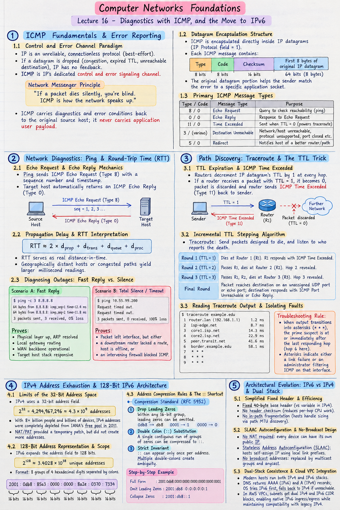

Short Notes & Visual Summary
Handwritten / quick summary notes for Lecture 16:

Click image to open high-resolution version in new tab
ICMP Fundamentals & Error Reporting
1.1 Control and Error Channel Paradigm
IP is an unreliable, connectionless protocol designed purely for best-effort delivery. If a datagram is dropped along the path due to network congestion, expired TTL, or an unreachable destination, IP alone has no feedback mechanism. Internet Control Message Protocol (ICMP) serves as IP's dedicated control and error signaling channel.
"If a packet dies silently, you're blind. ICMP is how the network speaks up." ICMP carries diagnostics and error conditions back to the original source host; it never carries application user payload.
1.2 Datagram Encapsulation Structure
Architecturally, ICMP is encapsulated directly inside standard IP datagrams (IP Protocol field = 1). Although it operates as a network-layer helper protocol, it relies on IP for delivery. Each ICMP message contains an 8-bit Type field, an 8-bit Code field (providing fine-grained diagnosis), a Checksum, and the first 8 bytes of the offending original IP datagram so the sender can match the error to a specific application socket.
1.3 Primary ICMP Message Types
- Echo Request / Echo Reply (Type 8 / Type 0): Query-response pair verifying bidirectional reachability and measuring latency. Powers
ping. - Time Exceeded (Type 11, Code 0): Dispatched by intermediate routers when an IP packet's Time-to-Live (TTL) field decrements to zero. Powers
traceroute. - Destination Unreachable (Type 3): Informs sender that a network is unreachable (Code 0), host is down (Code 1), protocol is unsupported (Code 2), or UDP/TCP destination port is closed (Code 3).
- Redirect (Type 5): Sent by a default gateway notifying a local host that another router on the local subnet offers a more direct path.
Network Diagnostics: Ping & Round-Trip Time (RTT)
2.1 Echo Request & Echo Reply Mechanics
The ping utility transmits ICMP Echo Request (Type 8) datagrams stamped with a sequence number and local transmission timestamp. The target host's network stack automatically returns an identical ICMP Echo Reply (Type 0).
2.2 Propagation Delay & RTT Interpretation
By computing the time elapsed between sending the request and receiving the response, ping calculates the Round-Trip Time (RTT):
$$\text{RTT} \approx 2 \times d_{\text{prop}} + d_{\text{trans}} + d_{\text{queue}} + d_{\text{proc}}$$RTT serves as real distance-in-time: geographically distant hosts or congested transit hops naturally yield larger millisecond readings.
2.3 Diagnosing Outages: Fast Reply vs. Silence
- Scenario A (Fast Reply):
Proves: Physical layer up, ARP resolved, local gateway routing, WAN backbone operational, target host stack responsive.$ ping -c 3 8.8.8.8 64 bytes from 8.8.8.8: icmp_seq=1 time=12.4 ms 64 bytes from 8.8.8.8: icmp_seq=2 time=11.8 ms 3 packets sent, 3 received, 0% loss - Scenario B (Total Silence / Timeout):
Proves: Packet left interface, but either a downstream router lacked a route, the host is offline, or an intervening firewall blocked ICMP traffic.$ ping 10.55.99.200 Request timed out. Request timed out. 3 packets sent, 0 received, 100% loss
Path Discovery: Traceroute & The TTL Trick
3.1 TTL Expiration & ICMP Time Exceeded
Routers decrement an IP datagram's Time-to-Live (TTL) field by 1 at every forward hop to prevent forwarding loops. If a router receives a packet with $\text{TTL} = 1$, decrementing it yields 0. The router discards the packet and sends an ICMP Time Exceeded (Type 11) message back to the sender, embedding the router's own IP address as the source.
3.2 Incremental TTL Stepping Algorithm
Traceroute exploits this behavior intentionally: Send packets designed to die, and listen to who reports the death.
- Round 1 ($\text{TTL} = 1$): Dies at Router 1 ($R_1$). $R_1$ responds with ICMP Time Exceeded. Traceroute identifies hop 1 and measures RTT to $R_1$.
- Round 2 ($\text{TTL} = 2$): Passes $R_1$, decrements to 0 at Router 2 ($R_2$). $R_2$ sends Time Exceeded. Hop 2 revealed.
- Round 3 ($\text{TTL} = 3$): Passes $R_1, R_2$, dies at Router 3 ($R_3$). Hop 3 revealed.
- Final Round: Packet reaches destination server on an unassigned UDP port or echo port; destination responds with ICMP Port Unreachable or Echo Reply, terminating the trace.
3.3 Reading Traceroute Output & Isolating Faults
$ traceroute example.edu 1 router.lan (192.168.1.1) 1.2 ms 2 isp-edge.net 8.7 ms 3 core1.isp.net 14.3 ms 4 core2.isp.net 22.9 ms 5 peer.transit.net 41.6 ms 6 border.example.edu 58.1 ms <-- LAST RESPONDING HOP 7 * * * 8 * * * 9 * * * (path stops here)
Troubleshooting Rule: When diagnosing a broken connection where output transitions into asterisks (* * *), the prime suspect is at or immediately after the last responding hop (hop 6 above). Asterisks indicate either a link failure or an administrator filtering ICMP on that interface.
IPv4 Address Exhaustion & 128-Bit IPv6 Architecture
4.1 Limits of the 32-Bit Address Space
IPv4 uses a 32-bit address field, yielding exactly:
$$2^{32} = 4,294,967,296 \approx 4.3 \times 10^9 \text{ addresses}$$With global population exceeding 8 billion and billions of mobile phones, IoT sensors, cloud virtual machines, and smart devices online, IPv4 addresses were completely depleted from IANA's free pool in 2011. While NAT/PAT provided a temporary patch, it did not create more addresses.
4.2 128-Bit Address Representation & Scope
IPv6 expands the address field from 32 bits to 128 bits:
$$2^{128} \approx 3.4028 \times 10^{38} \text{ unique addresses}$$This provides millions of addresses per square millimeter of Earth's surface, effectively eliminating scarcity forever.
Format: Written as 8 groups of 4 hexadecimal digits separated by colons:
$$\underbrace{2001}_{\text{16 bits}} : \underbrace{0\text{db}8}_{\text{16 bits}} : \underbrace{85\text{a}3}_{\text{16 bits}} : \underbrace{0000}_{\text{16 bits}} : \underbrace{0000}_{\text{16 bits}} : \underbrace{8\text{a}2\text{e}}_{\text{16 bits}} : \underbrace{0370}_{\text{16 bits}} : \underbrace{7334}_{\text{16 bits}}$$4.3 Address Compression Rules & The :: Shortcut
- Rule 1 — Drop Leading Zeros: Within any 16-bit group, leading zeros can be omitted.
0db8 → db8;0001 → 1;0000 → 0. - Rule 2 — Double Colon (::) Substitution: A single contiguous run of consecutive groups consisting entirely of zeros can be compressed to
::. - Strict Invariant:
::can appear only once per address. Multiple double-colons create mathematical ambiguity in the number of reconstructed zero fields.
Step-by-Step Example:
- Full Form:
2001:0db8:0000:0000:0000:0000:0000:0001 - Omit Leading Zeros:
2001:db8:0:0:0:0:0:1 - Collapse Consecutive Zeros:
2001:db8::1
Architectural Evolution: IPv6 vs IPv4 & Dual Stack
5.1 Simplified Fixed Header & Efficiency
IPv6 did not merely enlarge addresses; it completely overhauled the Layer 3 protocol header:
- Fixed 40-byte Base Header: Facilitates ultra-fast hardware routing and pipelining compared to IPv4's variable header length.
- No Header Checksum: Checksum processing is offloaded to Layer 2 and Layer 4, eliminating CPU-heavy recalculation at every single hop.
- No In-Path Fragmentation: Intermediate routers do not fragment packets; path MTU discovery requires end hosts to handle sizing.
5.2 SLAAC Autoconfiguration & No-Broadcast Design
- No NAT Required: True end-to-end global reachability is restored. Every device can have its own public IP.
- Stateless Address Autoconfiguration (SLAAC): Hosts automatically self-assign an IP using local link prefixes broadcast by routers, without requiring a centralized DHCP server.
- No Broadcast Addresses: Broadcasting (which disturbs all hosts on a subnet) is completely eliminated in favor of multicast groups and anycast.
5.3 Dual-Stack Coexistence & Cloud VPC Integration
Because the global Internet cannot switch overnight, the primary transition mechanism is Dual Stack:
Modern hosts and cloud VPC instances maintain both an IPv4 and IPv6 network stack simultaneously. The application queries DNS: if both an AAAA (IPv6) and A (IPv4) record return, the operating system attempts communication via IPv6 first, falling back seamlessly to IPv4 if unreachable.
In AWS VPCs, subnets receive dual IPv4 and IPv6 CIDR blocks, enabling native IPv6 ingress/egress while maintaining full compatibility with legacy IPv4 infrastructure.
Original PDF Notes
Below is the original PDF document for reference: